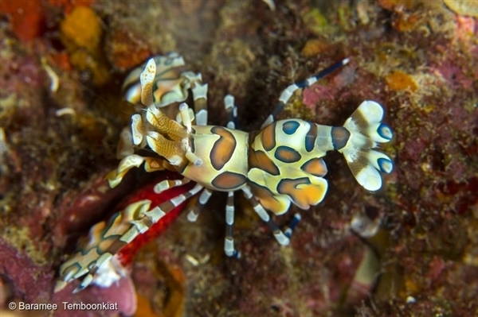

해양 보호 3가지 해야하는 이유
안녕하세요 이 사이트는 지백이의 첫번 째 웹사이트 도전 사이트입니다.
주제로는 해양보호에 대해서 알아보고 종별로 특징을 알아보는 사이트입니다.
지난 금요일, 미국 오바마 대통령이 세계에서 가장 큰 해양보호구역을 탄생시킬 것을 공식 발표했습니다. 그리고 오늘(8월 30일), 새로운 해양환경보호조약을 위해 세계 각국의 대표들이 뉴욕 유엔본부에 모였습니다. 이것은 우리의 푸른빛 행성 지구에 환상적인 소식이 아닐 수 없습니다.
전체 바다의 3분의 2에 해당하는 국경 밖 바다를 공해(公海)라고 부릅니다. 아직 공해에 대한 보호법이 존재하지 않아 우리의 바다는 고통받고 있습니다. 하지만 각국 정부들이 이같은 상황을 바꿔나가려는 시도를 하는 지금, 우리는 바다를 회복시키기 위한 첫걸음을 떼는 중입니다.
운이 좋았던 저는 동료들과 함께 NGO와 정부 대표들이 참석한 유엔 회의에 참석할 수 있었습니다. 우리는 모두 함께 힘을 모아 물고기들과 상어, 거북이를 비롯한 다양한 해양생물들이 평화롭게 살 수 있는 해양보호구역의 지정을 위해 싸워나가야만 합니다.
우리에게 해양보호구역이 필요한 3가지 이유는 바로!
1. 더 많은 해양보호구역 = 더 많은 생명체!
연구 결과에 의하면 해양보호구역, 즉 함부로 손을 댈 수 없는 해양생태계보전지역에서는 4배 이상의 해양생물과 해양식물이 서식하며 개체의 크기 또한 크게 증가한다고 합니다. 더불어 고래와 바다거북 등 멸종위기종에 번식지를 제공해주고 해양생태계와 생물다양성을 보존, 유지하는 역할을 합니다.
